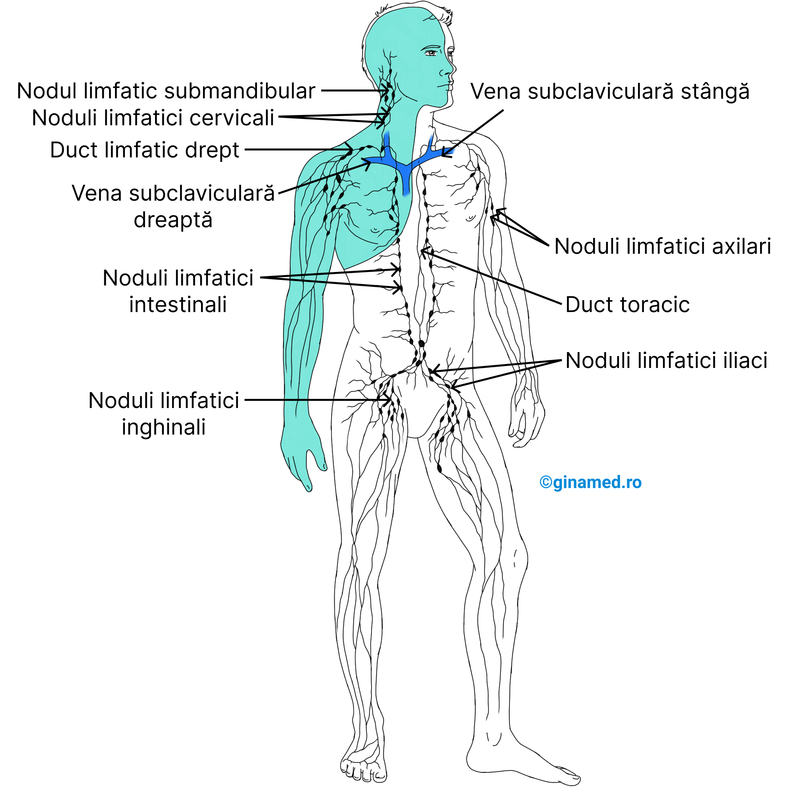

Descoperă structura și funcțiile sistemului limfatic.
Sistemul limfatic este o rețea complexă de vase, organe și țesuturi care colectează și transportă limfa, un lichid transparent ce conține celule imune. Acesta protejează organismul prin apărarea împotriva agenților patogeni și asigură echilibrul lichidelor în țesuturi.
| Funcție | Descriere |
|---|---|
| Drenaj limfatic | Colectează excesul de lichid interstițial și îl reintroduce în circulația sanguină |
| Apărare imună | Filtrează limfa prin ganglioni limfatici, unde celulele imune distrug agenții patogeni |
| Absorbție lipide | În intestinul subțire, vasele limfatice (vasele chilifere) absorb și transportă grăsimile |
| Menținerea echilibrului hidric | Previne acumularea de lichid în țesuturi (edeme) prin drenajul limfatic |
| Componentă | Caracteristici | Exemple |
|---|---|---|
| Vase limfatice | Conducte prin care circulă limfa | Vase superficiale și profunde |
| Ganglioni limfatici | Filtre biologice cu rol în apărare | Submandibulari, axilari, inghinali |
| Organe limfoide | Produc și matură celule imune | Timus, splină, amigdală, măduva osoasă |
| Țesut limfoid | Țesut cu celule imune în mucoase | Placă Peyer în intestin, amigdală |
Foarte fine, cu pereți permeabili, colectează lichidul din spațiile intercelulare
Au valve care împiedică refluxul limfei, conduc limfa spre ganglioni și apoi spre vene
Cel mai mare, drenează limfa din jumătatea stângă a corpului și membrele inferioare
Drenează limfa din partea dreaptă a capului, gâtului și toracelui
Ovală, dimensiuni mici
Filtrează limfa și produc limfocite
Ganglion axilar, inghinal, cervical
Limfocite B și T, esențiale în apărarea organismului
Se pot mări în caz de infecții sau inflamații
Organ situat în mediastin, maturare limfocite T
Formarea și maturarea limfocitelor T
Cel mai mare organ limfatic, situat în stânga sus abdomen
Filtrează sângele, elimină celulele vechi, stochează sânge
Țesut limfoid în gât
Apără tractul respirator și digestiv
Țesut hematopoietic din oase
Producția tuturor celulelor sanguine, inclusiv limfocite
Sistemul limfatic recunoaște și elimină bacterii, virusuri și alte microorganisme care pot cauza boli.
Limfocitele sunt celule esențiale ale imunității, care recunosc antigenele și atacă țintele specifice.
Sistemul limfatic asigură o apărare rapidă și eficientă atât prin mecanisme generale, cât și prin cele adaptative.